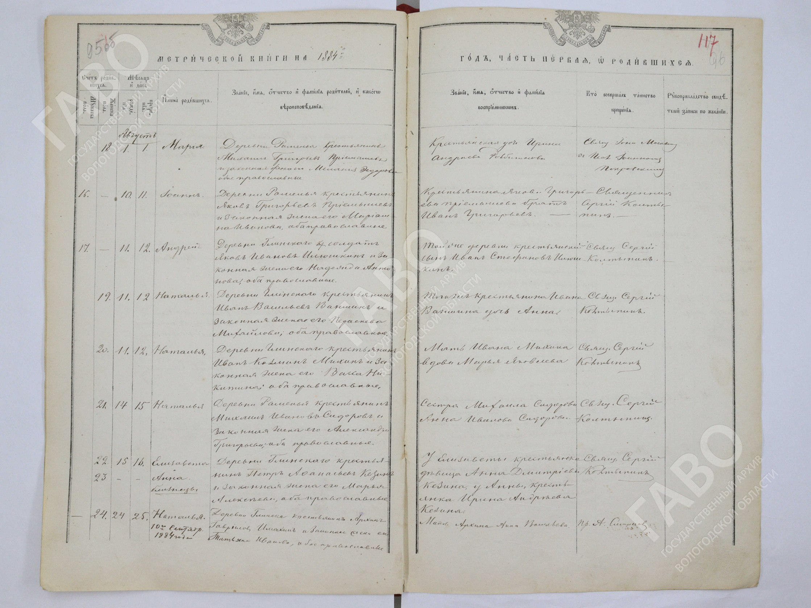
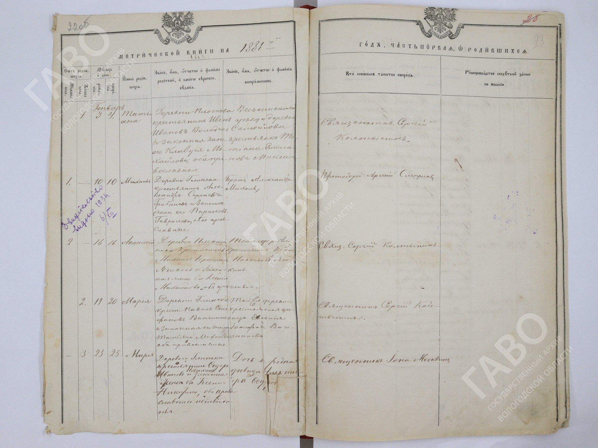

Начало: 30.10.2026 18:24:21 UTC (21:24 МСК). Первичный поиск и чтение завершены: 31.10.2026 02:04:36 UTC (05:04 МСК). Этот интервал — 7 ч 40 мин 14 с. Подготовка и публикация итогов выполнены после этого среза. Публичный сайт визуально проверен 2026-10-31T02:28:17.732Z. Техническое закрытие журнала завершено 2026-10-31T07:49:55.381Z. Эти отметки не означают непрерывную работу; после 02:04 UTC нового первичного поиска не велось. Заключительная техническая проверка вышла за плановый восьмичасовой срок.
Статус: результаты ограниченного по времени этапа; нерешённые вопросы и продолжение перечислены ниже.
Плановый предел — до 8 часов от 30.10.2026 18:24:21 UTC; крайний срок — 31.10.2026 02:24:21 UTC. Чтение 1881 года остановлено на границе раздела смертей: образ 40 просмотрен, образ 41 не прочитан.
Новых доказанных прямых предков — 0. Новых доказанных соединений найденных ветвей с основной семьёй — 0. При этом прочитаны новые первичные семейные записи, уточнены прежние гипотезы и найден сильный кандидат на рождение Андрея.
1. НОВЫЕ ДОКАЗАННЫЕ ПРЕДКИ
Пока не установлены. Косьма 12 лет в 1860 году и семейный Кузьма 80 лет в 1926 году — вероятное тождество. Андрей, родившийся 11.08.1884, и прадед из госпитальной карточки 1915 года — также вероятное тождество. Оба перехода требуют позднего персонального документа.
2. НОВЫЕ ДОКАЗАННЫЕ СВЯЗИ ВНУТРИ КАНДИДАТНЫХ СЕМЕЙ
• Шалагины: брак Прокопия Алексеева и Веры 21.07.1840 называет её отца Никифора Андреева из Дубровы. ИВ 1847 прямо называет Прокопия пасынком Василия Никитина; биологическая мать этим не установлена. ИВ 1860, двор 31, называет Косьму 12 лет сыном Прокопия и Веры. Александра, их дочь, найдена в метрике 14.04.1846. Имя и отчество Веры уже были в исходном тексте: новая карточка Веры сама по себе не новое открытие человека.
Доказательства: брак 21.07.1840 — МК Троицкой церкви Лекмы, запись № 15 слева на опубликованном развороте «л.25» (месяц на предыдущем развороте 24); точный архивный шифр не установлен: Скан первоисточника
ИВ 1847, л.226, двор 17: Скан первоисточника По году и фолиации соответствует ГАТО 160/1/17978, лл.224–252; штамп не показан, год 1860 в имени файла ошибочен. Каталог: archives.tverreg.ru/infres/-/archive/gato/cfcard/cftvergenealogy/3163374
ИВ 1860, л.244, двор 31: Скан первоисточника Атрибуция по году/фолиации: ГАТО 160/1/17983, лл.242–260; штампа нет. Каталог: archives.tverreg.ru/infres/-/archive/gato/cfcard/cftvergenealogy/3163563
Александра 14.04.1846 — МК Лекмы, л.212 об., женская№ 7: Скан первоисточника Каталог соответствующего экземпляра ГАТО 160/1/34882, лл.207–248 (штамп на скане не показан): archives.tverreg.ru/infres/-/archive/gato/cfcard/cftvergenealogy/3067405
• Пановы: ИВ 1860, двор 52, прямо связывает Матвея Антонова с сыном Прокопием. В семье 1847 есть также Матвей Матвеевич. Переходы Иван Прокопьевич → Григорий Иванович → Евдокия не доказаны.
Доказательства: ИВ 1860, л.245 об., двор 52, атрибуция ГАТО 160/1/17983 по году/фолиации: Скан первоисточника
ИВ 1847, л.228 об., двор 40, атрибуция ГАТО 160/1/17978 по году/фолиации: Скан первоисточника Каталоги экземпляров приведены выше; штампы архивных дел на этих открытых изображениях не показаны.
• Глинско, ревизия 1858: документированы семьи Николая Васильева → Алексея → Якова 10 лет и Ивана Матвеева → Якова 17 лет. Связь с основным Яковом неизвестна; фамилия Илюшкин им не присвоена. Ирина и Маремьяна — текущие жёны отцов; их материнство остаётся вероятным.
Доказательства: ГАВО 950/1/5; семья 21, лл.131 об.–132, образ 139: gosarchive.gov35.ru/archive1/unit/519047 ; семья 27, лл.133 об.–134, образ 141: gosarchive.gov35.ru/archive1/unit/519047 . Полный раздел Глинска — лл.126 об.–138, образы 134–145.
• Глинско, 1882: Фёдор Иванов Илюшкин — отец восприемника Якова и младенца Андрея; Ксения Никитина — мать младенца. Степан Иванов Илюшкин — отец восприемника Ивана и младенца Сергия; Марфа Ильина — мать младенца. Матери старших сыновей не назначены. Андрей 1882 умер 16.09.1882 и не объединён с прадедом. Братство Фёдора и Степана не доказано.
Доказательства: ГАВО 496/66/183; Андрей№ 16 м, лл.51 об.–52, образ 54: gosarchive.gov35.ru/archive1/unit/453580 ; Сергий№ 20 м, лл.52 об.–53, образ 55: gosarchive.gov35.ru/archive1/unit/453580 . Заголовок «Август» для Андрея — образ 53: gosarchive.gov35.ru/archive1/unit/453580 .
• Глинско, 1881: у Фёдора Иванова и Ксении Никитиной родилась Мария 23 января, крещена 25 января. Восприемница Александра прямо названа «Дочь е[го] родная, девица Александра Фед[орова]»; окончание патронима частично закрыто ремонтом. Отцовство Александры документировано внутри этой записи. Вставленная фамилия отца читается менее уверенно, поэтому соединение обеих дочерей с уже показанной семьёй 1882 года оценено как вероятное. Материнство Ксении относительно Александры не установлено. Обе новые карточки показаны зелёными, связь с основной ветвью остаётся гипотетической.
Доказательство: ГАВО 496/66/183, лл. 22 об.–23, образ 24, женская запись № 3: gosarchive.gov35.ru/archive1/unit/453580 .
Со слов пользователя добавлены Юлия и Алексей, имя Зинаида исправлено на Зою. Эти сведения показаны обычным цветом и не выдаются за архивные открытия.
3. НОВЫЕ ПЕРСОНАЛЬНЫЕ БИОГРАФИЧЕСКИЕ СВЕДЕНИЯ
Для основной ветви сверка выявила один новый точный факт: Андрей поступил в лазарет 11.09.1915. Дата прочитана в уже известном первичном скане; в facts и полном тексте исходных family.json/data.js её не было. Ранение 08.09.1915 уже было известно.
Доказательство: карточка лазарета№ 91, РГВИА, картотека бюро учёта потерь, ящик 1331-И, графа «Принят»; номер листа не установлен: gwar.mil.ru/heroes/document/932/ . Прочитана сохранённая локальная часть img/card1915-andrey.jpg; текущая недоступность полного оригинала указана в тексте.
У Николая дата 05.10.1916 уже присутствовала в исходной базе как ранение. Исправлено её значение: поступление на лечение. Это уточнение смысла существующей даты, а не новая дата или новый источник.
Доказательство: уведомление Тамбовского комитета Земского союза 1916, графа «Принят», карточка 1961472, образ 2090231; лист и отдельный шифр самого уведомления в выписке не установлены: gwar.mil.ru/heroes/document/932/ . РГВИА 16196/1/4 в сводном источнике относится к именному списку потерь; не переносим этот шифр автоматически на уведомление.
У Алексея 1913 года из несвязанной ветви прочитан кандидатский номер ВКП(б) 5150483. Это новое сведение из известного источника; его нельзя считать фактом основной ветви.
Доказательство: ЦАМО 58/18002/297, печатная страница 2, строка 32; электронный образ 00000053, номер архивного листа не установлен: obd-memorial.ru/html/info.htm .
Новая метрика: Андрей родился 11 и крещён 12 августа 1884 года, родители Яков Иванов Илюшкин и Надежда Архипова, восприемник Иван Стефанов Илюшкин. Запись достоверна, но перенос её на прадеда вероятен: в сентябре 1915 ему было бы 31, тогда как прежняя выписка карточки даёт 32. Верх карточки с возрастом сейчас не получен. Новая точная дата рождения пока не входит в число доказанных фактов прадеда.
Доказательство: ГАВО 496/66/183, лл.95 об.–96, образ 98, мужская№ 17; «Август» и 1884 указаны на развороте: gosarchive.gov35.ru/archive1/unit/453580 .
Эвакуация Степана 05.11.1941, ППГ 979, его часть, история 311 сд, призыв Андрея 1906 года и адрес 1947 года уже были в исходной базе; повторно новыми не считаются.
4. ПРОВЕРКА ГИПОТЕЗ
Наиболее продвинулись две гипотезы: Косьма Прокопиев 1860 ↔ Кузьма 1926 и Андрей 1884 ↔ Андрей 1915. Первичные семьи установлены; поздние мосты не найдены.
Опорные записи: Косьма — ИВ 1860, л.244, двор 31, URL скана и условная архивная атрибуция приведены в разделе 2; Андрей — ГАВО 496/66/183, лл.95 об.–96, м 17: gosarchive.gov35.ru/archive1/unit/453580 . Это доказательства исходных записей, а не закрытых переходов к поздним родственникам.
Родители героя Николая 1908 года и Алексея 1913 года пока неизвестны. Их братство и связь с основной ветвью не доказаны. Колька, Ваня и Люська из очерка 1990 года сохранены с бытовыми именами и оговорками; полные ФИО не выведены.
Источники этой проверки: семейный эпизод — МорщининА.А., ЗадумкинН.Н., «Солдаты славы не искали»,1990, с.33–35, особенно с.35: www.booksite.ru/fulltext/morchin/text.pdf ; документ Алексея — ЦАМО 58/18002/297, строка 32: obd-memorial.ru/html/info.htm . Родители обоих этими источниками не установлены.
Яков 6/6 октября 1884 года, запись № 23, не присоединён к семье Степана Илюшкина 1882 года: независимое чтение даёт Илюхин и мать Марфу Афанасьеву, а не Ильину. Возможность писцовой ошибки не является доказанным объяснением различия.
Доказательство: ГАВО 496/66/183, лл.97 об.–98, образ 100, мужская№ 23: gosarchive.gov35.ru/archive1/unit/453580 . Независимая выписка: ilyushkins/sobor1884-yakov23-independent.json; прочтения Илюхин/Афанасьева сохранены с оценками уверенности.
Исключение младенца Косьмы 1855–1856 было известно раньше. Новым успехом его не считаем. Убраны чрезмерные выводы: ограниченная выдача не означает отсутствия других документов Степана; год издания справочника 1866 года не датирует переход Глинского между приходами.
Уже известное доказательство смерти: МК Лекмы 1856, л.428 об., мужская№ 9; точный шифр дела в исходной публикации не указан: Скан первоисточника
Для ограниченной проверки Степана: обобщённая карточка ОБД 551029374 — obd-memorial.ru/html/info.htm . Она не является полным поиском базы. Географическое уточнение: «Список населённых мест Череповского уезда»,1896, печ.с.32/PDFс. 46,№ 1059 — www.booksite.ru/fulltext/spisok/text.pdf .
ГРАНИЦЫ ПРОЧИТАННЫХ ПЕРВИЧНЫХ РАЗДЕЛОВ
Богоявленский собор, ГАВО 496/66/183:
• 1884, рождения: образы 93–101, 28 мужских и 31 женская запись без пробелов. Образ 102 пустой; 103 — титул браков, л. 101. Единственный Андрей — мужская № 17. Это полнота раздела рождений, а не утверждение о прочтении всех браков и смертей 1884 года.
• 1880, рождения: образы 3–11, 20 мужских и 22 женских записи; два Николая не Яковлевичи. Образ 12 — титул браков.
• 1880, браки: образы 13–15, 11 записей. Образ 16 — пустой бланк и титул смертей.
• 1880, смерти: образы 17–21, по строкам 14 мужских и 18 женских записей. Образ 22 пустой, 23 — титул 1881 года.
• 1881, рождения: образы 24–35, 22 мужские и 37 женских записей, нумерация без пробелов и повторов. Образ 36 — пустой бланк; 37 — титул браков. Три Николая пока не отождествлены с целевым взрослым Николаем.
• 1881, браки: образы 38–39, семь актов; образ 40 — пустой бланк и титул смертей. Целевой брак Якова Иванова Илюшкина и Надежды Архиповой в этих семи актах не установлен. Раздел смертей не читался: остановка на образе 40, образ 41 не прочитан.
Источники границ 1881 года: gosarchive.gov35.ru/archive1/unit/453580 ; gosarchive.gov35.ru/archive1/unit/453580 .
Контрольные границы: gosarchive.gov35.ru/archive1/unit/453580 ; gosarchive.gov35.ru/archive1/unit/453580 .
Ранее прочитанные разделы: Глинско 1858, ГАВО 950/1/5, образы 134–145, 38 семей; Вауч 1883, ГАВО 496/66/174, 91 мужская запись и поздний отрезок 1882; собор 1883, образы 73–81, 29 мужских и 25 женских записей. Отрицательные результаты относятся только к указанным разделам и читаемым графам.
5. НОВЫЕ АРХИВНЫЕ МАРШРУТЫ
Главный результат этого типа — оцифрованный соборный экземпляр ГАВО 496/66/183, 1880–1889, о прихожанах Череповецкого уезда. Он действительно открыт и привёл к новым первичным именам и датам:
gosarchive.gov35.ru/archive1/unit/453580
Точные непрочитанные маршруты:
• ГАВО 496/18/86 т. 7: соборные записи 1879–1880, лл. 47–94; не оцифровано: gosarchive.gov35.ru/archive1/unit/454992
• ГАВО 989/1/5: алфавит на «И», 1896–1913; /301: 1905; /438: раненые 1915. Не оцифрованы, присутствие нужных людей не установлено:
gosarchive.gov35.ru/archive1/unit/1118184
gosarchive.gov35.ru/archive1/unit/1115468
gosarchive.gov35.ru/archive1/unit/1116533
• Череповецкий ЦХД Р-26/2/7 А–7 Б: метрические сведения 1920-х, не оцифрованы:
gosarchive.gov35.ru/archive33/unit/199330
gosarchive.gov35.ru/archive33/unit/199331
• Соборные копии для героя и Алексея: ГАВО 496/59/87, 1908, лл. 1–43 об.; 496/59/235, 1913, лл. 1–44 об. Не оцифрованы и персонально не прочитаны.
Точные дополнительные карточки Лекмы, ЗАГС, Каменки и пенсионного дела героя собраны в JSON и отраслевых журналах. Каталожный шифр не доказывает присутствия семьи. Черновики запросов сохранены, ничего не отправлено.
6. ИСТОРИЧЕСКИЙ КОНТЕКСТ
Уточнена приходская география Глинского по первичным справочникам. Точный момент перехода между приходами не установлен. Военный и школьный контекст из прежних двух раундов не включён повторно в новые достижения; движения части не доказывают присутствия Степана.
7. ВОПРОСЫ, НЕДОСТАЮЩИЕ ДОКУМЕНТЫ И УЧАСТИЕ ПОЛЬЗОВАТЕЛЯ
SH-01. Родители Кузьмы. Найден Косьма Прокопиев 1860; тождество вероятно. Нужен поздний брак/акт Кузьмы либо рождение ребёнка с отчеством отца. Метрики 1848 и поздние закрытые книги не прочитаны. Следующий шаг — персональный мост, а не повтор общего поиска фамилии.
SH-02. Степан и Прасковья. Годы рождения 1898/1902 не разрешены; Прасковья названа матерью в дворе 1926. Её отчество, девичья фамилия и возможный повторный брак Кузьмы неизвестны. Решают рождение Степана и брак родителей; нужны копии целевых актов.
PA-01. Родители Евдокии. Версия о Григории и Прасковье двора 85 остаётся гипотезой. Решают её рождение около 1901–1903 или брак со Степаном. Каталоги ЗАГС проверены, нужные акты не прочитаны.
PA-02. Григорий и Прасковья. Ранняя семья Пановых документирована, но Григорий не соединён с Иваном Прокопьевичем. Версия Большаковой Алексеевны не доказана. Нужны рождение Григория около 1869 и брак; ревизские каталоги и Geni их не заменяют.
IL-01. Андрей и Мария. Вероятная запись Андрея 1884 найдена; отчество и девичья фамилия Марии неизвестны. Рождения собора за 1884 год прочитаны полностью: образы 93–101, 28 мужских и 31 женская запись без пробелов; образ 102 пустой, образ 103 — титул браков на л. 101. Единственный Андрей — № 17. Полнота раздела усиливает ценность находки, но не устраняет расхождение возраста 31/32 и не доказывает тождество сама по себе. Приоритет — брак пары и призывной/посемейный документ с родителями и точной датой рождения. Источник: ГАВО 496/66/183, gosarchive.gov35.ru/archive1/unit/453580 ; граница раздела: gosarchive.gov35.ru/archive1/unit/453580 .
IL-02. Николай около 1879. Братство с Андреем не доказано. Вауч 1879 просмотрен по образам 1–18, мужские № 5–35 до начала августа; № 1–4 и остаток года не закрыты. В соборной книге рождения 1880 года прочитаны полностью: образы 3–11, 20 мужских и 22 женских записи; два Николая имеют других отцов, не Якова. Образ 12 — титул браков. Нужны рождение с родителями и связь с человеком, которому было 37 лет 05.10.1916. Рождения 1881 года также прочитаны полностью: образы 24–35, 22 мужские и 37 женских записей. Найдены три Николая, но целевой взрослый Николай не установлен. Один ребёнок, № 9, рождён 23 и крещён 26 апреля в Плоскове; отец Яков Алексеев, фамилия читается неуверенно. Приписка «умер» есть, точная дата и год не установлены. Отчество отца Алексеев само по себе не исключает тождество с каким-либо Николаем Яковлевичем: братство с Андреем не доказано. Запись остаётся неотождествлённой, а не отвергнутой лишь по отчеству. Источник: ГАВО 496/66/183, лл. 27 об.–28, образ 29: gosarchive.gov35.ru/archive1/unit/453580 . Источник: ГАВО 496/66/183, gosarchive.gov35.ru/archive1/unit/453580 ; граница рождений: gosarchive.gov35.ru/archive1/unit/453580 .
BIO-01. Михаил 1927. Музейная карточка и награждённый краснофлотец не отождествлены с дедом. Нужен военный билет, призывной/учётный документ с местом рождения и родственниками. Семейная копия была бы полезна, но исследование не останавливается в ожидании неё.
BIO-02. Степан после ППГ 979. Нового личного продолжения не найдено; медицинский скан не получен. Нужна эвакуационная цепочка или поимённое возвращение в часть. Security/TLS не обходились. Точная дата и место исчезновения неизвестны.
BIO-03. Боковые ветви и переселение. Надёжного нового персонального моста нет. Нужны браки, домовые и похозяйственные записи. Полезны известные семье замужние фамилии, адреса и периоды проживания.
HERO-01. Герой и Алексей. Нужны рождения 1908/1913 либо семейная запись с полными родителями обоих. Пенсионное дело ГАРФ А-539/6/1082 совпадает только по ФИО; оно не прочитано, фонд по проверенному объявлению недоступен до 31.01.2027. Братство и основной мост остаются гипотезами.
MAT-01. Материнские линии. Вера — дочь Никифора из Дубровы; её фамилия не названа. Надежда Архипова — мать ребёнка 1884, вероятная мать прадеда. Девичьи фамилии обеих Прасковий и Марии, жены Андрея, неизвестны. Ксения и Марфа не назначены матерями старших сыновей; Ксения также не назначена матерью восприемницы Александры из записи 1881 года. Ирина и Маремьяна 1858 года — лишь вероятные матери.
BIO-04. Зоя. Имя исправлено со слов пользователя; запись двора 1926 уже была известна. Найден маршрут к книге рождений 1925 Р-312/1/1077, акт не прочитан. Работа на торфоразработках и винзаводе не получила нового персонального документа.
BIO-05. Лидия. Замужняя фамилия и даты не установлены. Отсутствие в дворе 1926 не доказывает точного года рождения. Нужен акт рождения/брака или поздняя похозяйственная запись.
BIO-06. Стрельна. Семейная Мария Григорьевна не соединена с найденными тёзками. Книги Каменки Р-7965/84/29 и /83/2261 не оцифрованы; требуется точный дом/период и запись с родственниками. Мария Панова 1918 года имеет существенное возрастное расхождение с семейной кандидаткой около 1909.
BIO-07. Мария Малкова. Кандидатка 27.02.1910, Фонтанка 149/6, не отождествлена с родственницей. Нужна запись о родных/происхождении; домовая книга Р-7965/136/3508 не прочитана, доступ требует регистрации и оплаты.
Необходимое участие собрано, но сейчас ничего не требуется оплачивать или заказывать. После открытого чтения пользователь сможет решить, предоставлять ли семейные документы и получать ли конкретные архивные копии. Запросы не отправлялись.
ПУБЛИКАЦИЯ И ИЗМЕНЁННЫЕ ФАЙЛЫ
Итоговый набор: 78 карточек, 26 зелёных исследовательских. По сравнению с исходными 50 карточками добавлены 28: 26 исследовательских и две обычные семейные. Последнее дополнение после checkpoint 5 — Мария и Александра из записи 1881 года. Это показатели интерфейса, не число доказанных предков.
Сайт: 40oleg.github.io/family-tree/
История итоговой публикации: github.com/40oleg/family-tree/commits/main
Предыдущая подтверждённая публикация, checkpoint 5 с 76 карточками: github.com/40oleg/family-tree/commit/27d83e822063375377529d81608ac61ada8d2b
Перед публикацией проверен обновлённый набор: 78 карточек, 26 зелёных; пересечений карточек и несвязанных групп нет, переполнения текста нет. Юлия и Алексей показаны обычным цветом. Синтаксис данных, ссылки между записями и изображение записи 1881 года проверены. Развёртывание успешно; новые карточки и отчёт визуально проверены на публичном сайте в Chrome. Подтверждения и фактическое время сохранены в state.json.
Сравнение сохранённой исходной версии с текущими файлами показало изменения: assets/data.js, assets/app.js, assets/style.css, index.html, README.md. Добавлены исследовательские журналы, первичные сканы, вырезки и публикационные изображения. Отдельный перечень: file-manifest-final.json.
Аудит доказательств: completion-audit-final.json — семь категорий, исходные восемь вопросов и дополнения, сведения о промежуточных публикациях 1–5, реестр источников с URL, пути журналов и сравнение с исходной базой. Включены итоговые границы чтения 1880, 1881 и 1884 гг., новая выписка Марии и Александры и текущая таблица всех 15 вопросов.
ОЦЕНКА ЭФФЕКТИВНОСТИ И ДАЛЬШЕ
Самый полезный переход — от поиска однофамильцев к чтению конкретных первичных книг. Он дал семейные составы, различил Илюхиных и Илюшкиных и нашёл две сильные гипотезы тождества. Главный приоритет — новые доказанные прямые предки — пока не достигнут. Число сайтов, карточек и архивных шифров не используется как мера успеха.
Следующие шаги по приоритету: 1) поздний документ Андрея с родителями или точной датой рождения; 2) рождения Николая 1908 и Алексея 1913 для проверки семьи героя; 3) поздний брак Кузьмы или рождения его детей с отчеством отца; 4) рождение Евдокии и её брак. Продолжение доступного чтения собора — смерти 1881 с образа 41 и следующие годы; этот раздел не проверен. При появлении нового персонального документа потребуется пересмотреть соответствующую гипотезу. Пока решающие переходы не доказаны, приведённые выше ограничения и точные недостающие документы сохраняются.
ПОЛНОТА АРХИВНЫХ МАРШРУТОВ
Проверенный именной фонд — ГАВО 989. ГАВО 993 подтверждён: gosarchive.gov35.ru/archive1/funds/62675 ; опись gosarchive.gov35.ru/archive1/inventory/62695 не заполнена. Аннотация упоминает ратников 1906–1917, фронтовые списки 1914, пропавших 1914 и больных в отпуску 1917–1918; конкретные номера дел неизвестны. Это фондовый маршрут, не найденная семья.
Полные списки новых единиц 989, Р-26 и Р-807, проверенных фондов 993/Р 432/ГАНО и соборных дубликатов теперь приложены непосредственно в completion-audit-final.json: routeCompletenessAddendum. Исходные журналы: ilyushkins/glinsko-familylist-routes-review.json и ilyushkins/gavo-duplicate-routes-panov.json. Старая Р 26/1/77 новым результатом не считается.
Итоговая таблица: question-status-final.json и question-status-final.txt. Промежуточные таблицы checkpoint 4/5 сохранены для истории.
НОВЫЙ НЕОТПРАВЛЕННЫЙ ЧЕРНОВИК ДЛЯ ГАВО
Родители героя 1908/Алексея 1913 и независимый мост к Андрею 1884: research/2026-10-30-deep-182421/ilyushkins/request-draft-gavo-births.txt
Блоки: 496/59/87, лл. 1–43 об.; 496/59/235, лл. 1–44 об.; 989/1/5, 301, 438. Тождество Андрея, братство героя и Алексея, связь ветвей не предполагаются доказанными. Ничего не отправлено. Прежний черновик о семейных списках сохранён отдельно.
Новые первичные записи




Мария в дереве · Александра в дереве · Неотправленный черновик запроса